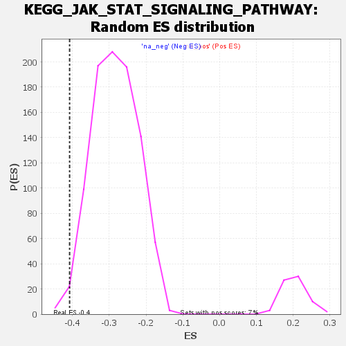

| | | Dataset | all_genes |
| Phenotype | NoPhenotypeAvailable |
| Upregulated in class | na_neg |
| GeneSet | KEGG_JAK_STAT_SIGNALING_PATHWAY |
| Enrichment Score (ES) | -0.40788844 |
| Normalized Enrichment Score (NES) | -1.4363499 |
| Nominal p-value | 0.012931035 |
| FDR q-value | 0.50673276 |
| FWER p-Value | 1.0 |
Table: GSEA Results Summary
 Fig 1: Enrichment plot: KEGG_JAK_STAT_SIGNALING_PATHWAY
Fig 1: Enrichment plot: KEGG_JAK_STAT_SIGNALING_PATHWAY
Profile of the Running ES Score & Positions of GeneSet Members on the Rank Ordered List
| SYMBOL | RANK IN GENE LIST | RANK METRIC SCORE | RUNNING ES | CORE ENRICHMENT | | 1 | SOCS2 | 962 | 1.568 | -0.0426 | No |
| 2 | PTPN11 | 1371 | 1.372 | -0.0535 | No |
| 3 | STAT1 | 1541 | 1.308 | -0.0505 | No |
| 4 | SPRED1 | 1649 | 1.274 | -0.0441 | No |
| 5 | SOS1 | 1889 | 1.187 | -0.0466 | No |
| 6 | SOS2 | 2141 | 1.100 | -0.0507 | No |
| 7 | PIAS2 | 2242 | 1.073 | -0.0459 | No |
| 8 | PIK3CB | 2395 | 1.032 | -0.0446 | No |
| 9 | SPRY2 | 2510 | 1.003 | -0.0414 | No |
| 10 | IL13RA1 | 2735 | 0.947 | -0.0454 | No |
| 11 | PIK3R3 | 2740 | 0.946 | -0.0360 | No |
| 12 | IFNAR1 | 2748 | 0.945 | -0.0269 | No |
| 13 | IFNAR2 | 2756 | 0.942 | -0.0177 | No |
| 14 | GRB2 | 2862 | 0.922 | -0.0148 | No |
| 15 | PIAS3 | 3259 | 0.829 | -0.0304 | No |
| 16 | PIK3R1 | 3428 | 0.796 | -0.0326 | No |
| 17 | SPRY1 | 3482 | 0.786 | -0.0278 | No |
| 18 | PIAS1 | 3530 | 0.777 | -0.0228 | No |
| 19 | STAM2 | 3977 | 0.684 | -0.0430 | No |
| 20 | SOCS4 | 4085 | 0.662 | -0.0428 | No |
| 21 | IFNGR2 | 4217 | 0.639 | -0.0442 | No |
| 22 | SOCS5 | 4332 | 0.619 | -0.0449 | No |
| 23 | SPRED2 | 4429 | 0.602 | -0.0446 | No |
| 24 | STAT3 | 4775 | 0.539 | -0.0601 | No |
| 25 | CBLB | 5116 | 0.484 | -0.0759 | No |
| 26 | LEPR | 5284 | 0.451 | -0.0815 | No |
| 27 | JAK2 | 5318 | 0.443 | -0.0790 | No |
| 28 | IFNGR1 | 5821 | 0.351 | -0.1060 | No |
| 29 | GHR | 6002 | 0.319 | -0.1137 | No |
| 30 | STAT5B | 6149 | 0.289 | -0.1196 | No |
| 31 | AKT1 | 6291 | 0.264 | -0.1255 | No |
| 32 | JAK1 | 6714 | 0.192 | -0.1492 | No |
| 33 | STAM | 6897 | 0.162 | -0.1587 | No |
| 34 | CBL | 6944 | 0.155 | -0.1599 | No |
| 35 | CISH | 6951 | 0.154 | -0.1587 | No |
| 36 | PIK3CA | 7078 | 0.131 | -0.1650 | No |
| 37 | PRLR | 7294 | 0.093 | -0.1772 | No |
| 38 | STAT6 | 7628 | 0.032 | -0.1971 | No |
| 39 | STAT2 | 7881 | -0.017 | -0.2122 | No |
| 40 | CREBBP | 7937 | -0.024 | -0.2153 | No |
| 41 | SOCS7 | 8266 | -0.086 | -0.2344 | No |
| 42 | PIK3R2 | 8407 | -0.114 | -0.2418 | No |
| 43 | SPRY3 | 8418 | -0.115 | -0.2412 | No |
| 44 | IRF9 | 8759 | -0.178 | -0.2601 | No |
| 45 | SPRY4 | 8861 | -0.198 | -0.2642 | No |
| 46 | TYK2 | 8869 | -0.199 | -0.2626 | No |
| 47 | IL6ST | 8961 | -0.217 | -0.2660 | No |
| 48 | OSMR | 8997 | -0.225 | -0.2658 | No |
| 49 | AKT3 | 9185 | -0.264 | -0.2745 | No |
| 50 | SOCS3 | 9544 | -0.338 | -0.2929 | No |
| 51 | BCL2L1 | 9548 | -0.338 | -0.2896 | No |
| 52 | IL20RB | 9629 | -0.356 | -0.2909 | No |
| 53 | IL12A | 9753 | -0.385 | -0.2944 | No |
| 54 | IL10RB | 9759 | -0.386 | -0.2908 | No |
| 55 | AKT2 | 10160 | -0.478 | -0.3103 | No |
| 56 | CNTF | 10179 | -0.482 | -0.3065 | No |
| 57 | LIFR | 10285 | -0.509 | -0.3077 | No |
| 58 | CCND2 | 10322 | -0.515 | -0.3047 | No |
| 59 | EP300 | 10522 | -0.568 | -0.3110 | No |
| 60 | PIK3CD | 10847 | -0.641 | -0.3242 | No |
| 61 | IL11 | 11819 | -0.889 | -0.3743 | No |
| 62 | CNTFR | 12270 | -1.023 | -0.3913 | No |
| 63 | PIM1 | 12427 | -1.076 | -0.3898 | No |
| 64 | IL13RA2 | 12519 | -1.104 | -0.3842 | No |
| 65 | PIAS4 | 12887 | -1.232 | -0.3940 | Yes |
| 66 | CTF1 | 13026 | -1.284 | -0.3893 | Yes |
| 67 | STAT4 | 13087 | -1.306 | -0.3797 | Yes |
| 68 | IL21R | 13551 | -1.480 | -0.3929 | Yes |
| 69 | IL7 | 13590 | -1.499 | -0.3800 | Yes |
| 70 | CCND3 | 13633 | -1.519 | -0.3671 | Yes |
| 71 | IL20RA | 13960 | -1.648 | -0.3702 | Yes |
| 72 | TSLP | 13965 | -1.650 | -0.3537 | Yes |
| 73 | EPOR | 14202 | -1.773 | -0.3501 | Yes |
| 74 | IL12RB1 | 14219 | -1.779 | -0.3330 | Yes |
| 75 | MYC | 14569 | -1.938 | -0.3345 | Yes |
| 76 | IL22RA1 | 14721 | -2.020 | -0.3232 | Yes |
| 77 | IL7R | 14870 | -2.116 | -0.3107 | Yes |
| 78 | IFNE | 14918 | -2.147 | -0.2918 | Yes |
| 79 | CLCF1 | 14989 | -2.189 | -0.2738 | Yes |
| 80 | IL11RA | 15008 | -2.197 | -0.2526 | Yes |
| 81 | CCND1 | 15176 | -2.325 | -0.2392 | Yes |
| 82 | IL4R | 15289 | -2.412 | -0.2215 | Yes |
| 83 | IFNLR1 | 15348 | -2.456 | -0.2001 | Yes |
| 84 | CSF2RA | 15478 | -2.550 | -0.1821 | Yes |
| 85 | IL10RA | 15551 | -2.615 | -0.1599 | Yes |
| 86 | IL6R | 15674 | -2.718 | -0.1398 | Yes |
| 87 | IL12RB2 | 15847 | -2.893 | -0.1209 | Yes |
| 88 | IL15RA | 15880 | -2.929 | -0.0931 | Yes |
| 89 | SOCS1 | 15924 | -2.979 | -0.0655 | Yes |
| 90 | IL15 | 16012 | -3.134 | -0.0389 | Yes |
| 91 | STAT5A | 16157 | -3.433 | -0.0128 | Yes |
| 92 | LIF | 16187 | -3.513 | 0.0210 | Yes |
Table: GSEA details [plain text format]

Fig 2: KEGG_JAK_STAT_SIGNALING_PATHWAY: Random ES distribution
Gene set null distribution of ES for KEGG_JAK_STAT_SIGNALING_PATHWAY